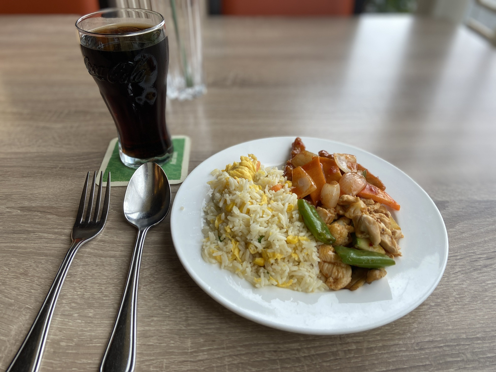
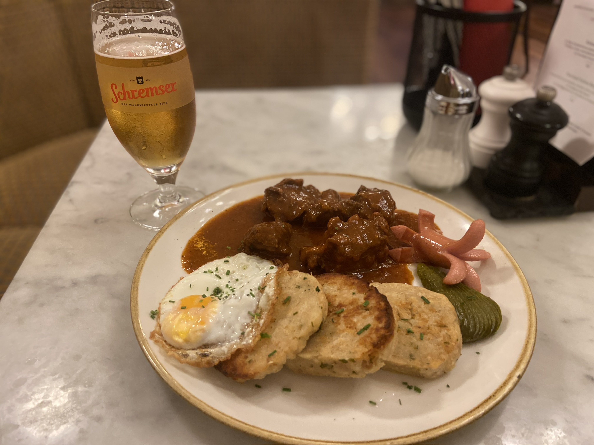
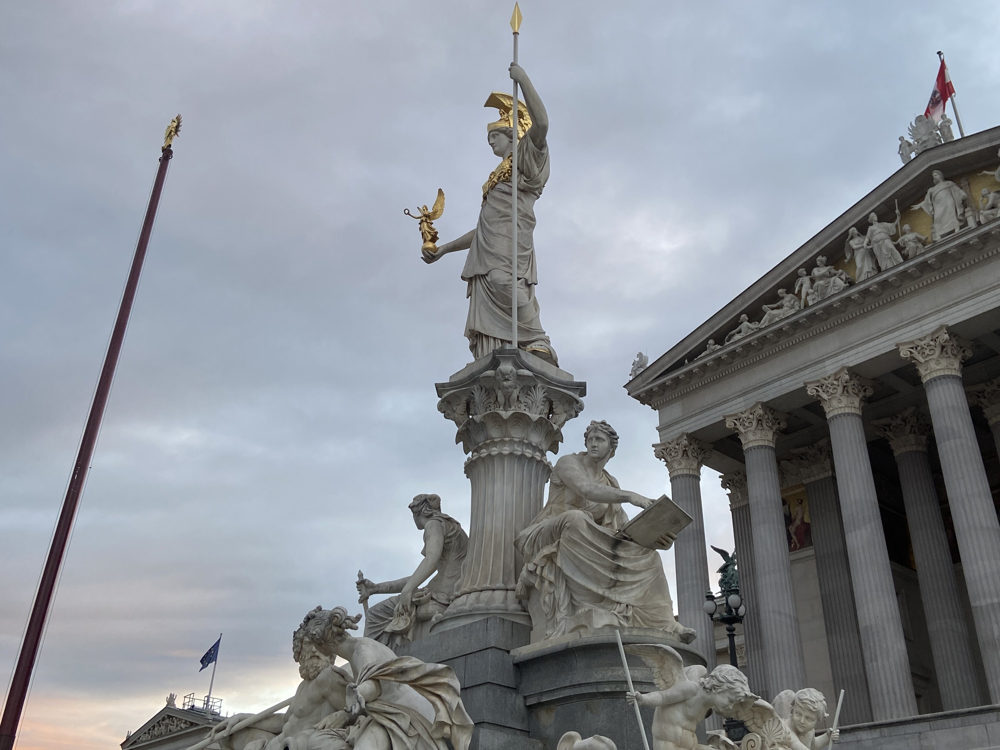
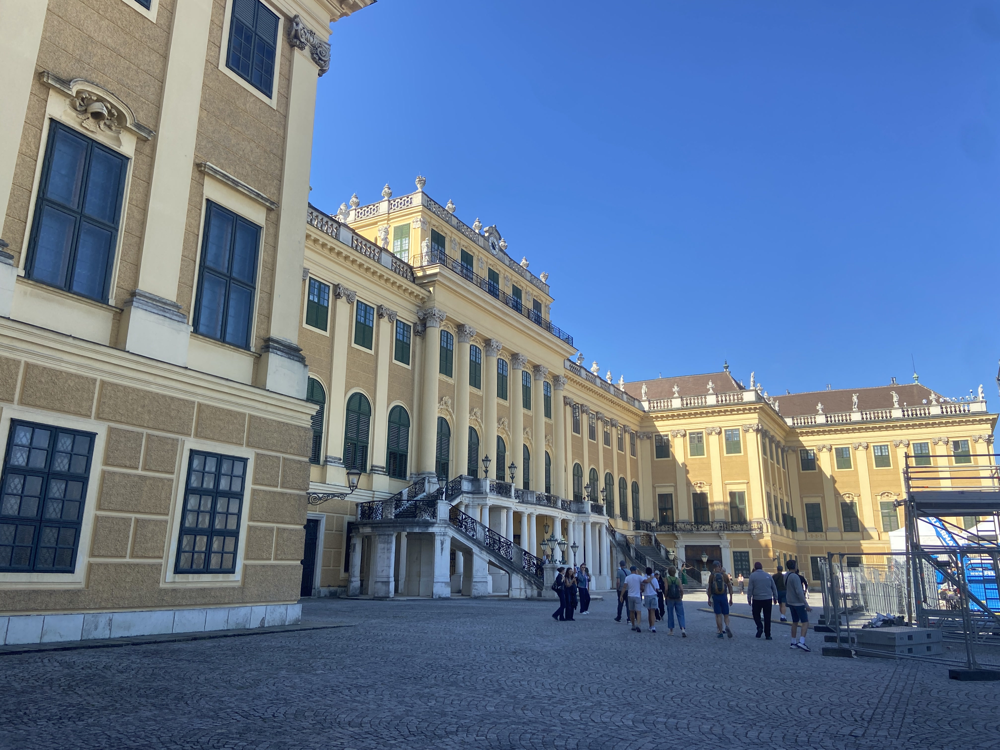
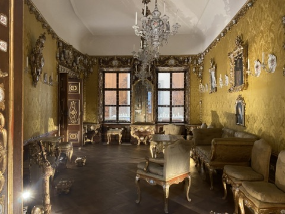
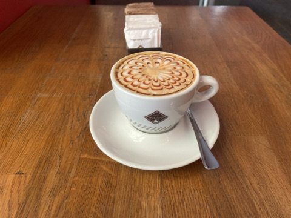
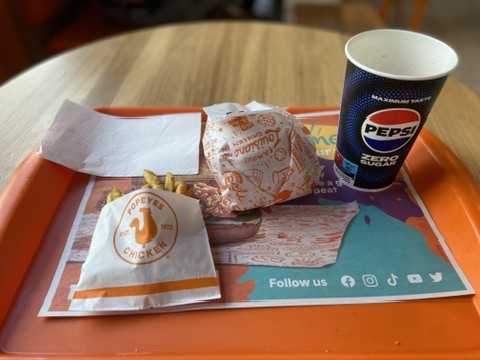
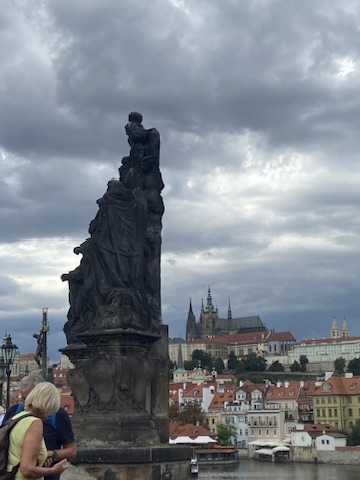
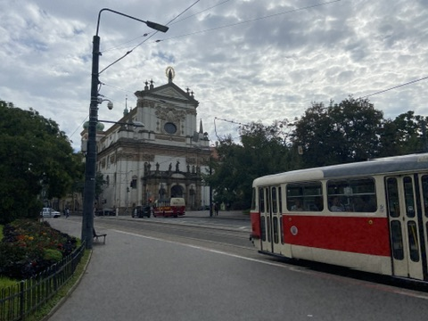
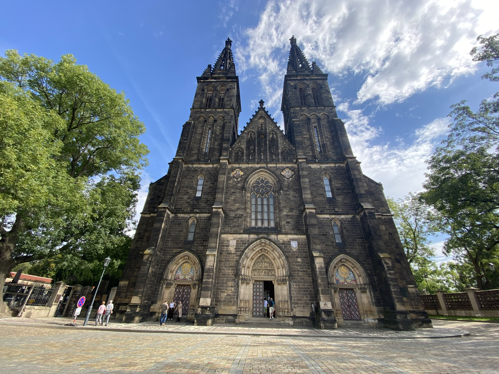

Vienna and Prague
ウィーンとプラハ
I had to go to Vienna to renew my passport, but I thought it would be a waste to just go to Vienna and come back, so I decided to stop by Prague as well.
This was my first trip to the Czech Republic, and Prague turned out to be a very beautiful city with delicious food and beer—it was a wonderful place.
パスポートの更新のためにウィーンに行かなければならなかったのですが、ただウィーンに行って帰るだけではもったいないのでプラハにも寄ることにしました。
今回が初めてのチェコ旅行でしたが、プラハは非常に美しい街で、料理やビールも美味しく、とても良い場所でした。
為替レート
現在の為替レートは、1ユーロ = 円 (時点) です。
ユーロ = 円
現在の為替レートは、1チェココルナ = 円 (時点) です。
チェココルナ = 円
Itinerary
旅程
| 14. Sep |  |
Salzburg → Vienna 🚃 Westbahn, 43.99€ |
|---|---|---|
 |
Sightseeing in Vienna | |
 |
||
| 15. Sep | |
Sightseeing in Vienna |
|
||
|
Vienna → Prague 🚌 Flixbus, 14.48€ |
|
| 16. Sep | |
Sightseeing in Prague |
|
||
|
Prague → Salzburg 🚌 Flixbus, 20.48€ |
Viena
ウィーン
What I Ate
食べたもの

食べ放題（鉄板焼き付き）/ コカ・コーラゼロ / チップ
📍 Mei Wei
17.5€ / 4€ / 1.5€
In Europe, you often find yourself unable to get Japanese food even when you crave it.
In such cases, I recommend visiting a Chinese buffet. Naturally, you can enjoy Chinese cuisine, but they often serve Japanese dishes like sushi and miso soup as well.
As for the taste, while it might not be exactly the same as in Japan, it is certainly delicious. In fact, the Chinese food itself might even be better than what you would find in Japan.
I have a small appetite and don't eat much, but since opportunities to sample a variety of dishes in small portions at European restaurants are rare (outside of set courses), I still think it is worth going.
A tip of around 10% of the bill is generally appropriate. Usually, adding a few euros and rounding up the total works fine.
ヨーロッパでは、日本食が食べたくても食べられないことの方が多いです。
そんな時は中国料理のビュッフェに行くのがおすすめです。中国料理はもちろん食べられますし、寿司や味噌汁などの日本食もよく置いてあります。
味についても、日本と同じとは行かないまでも、十分に美味しく食べられます。中国料理に関しては、もしかしたら日本で食べるのよりも美味しいかもしれません。
私は少食であまり食べられませんが、そもそも（コース料理などを除いて）ヨーロッパのレストランでいろいろな料理を少しずつ食べる機会はあまりないので、少食でもでも行く価値はあると思っています。
チップは大体代金の10%程度払えば良いと思います。数€＋端数を揃える感覚で大抵大丈夫です。

グラーシュ / ビール
📍 Café Rathaus
17.9€ / 5.9€
I got off at the Rathaus (City Hall) subway station on a whim and was looking for a place to have dinner when I stumbled upon this place by chance.
The interior had the atmosphere of a traditional Austrian or German café and was very beautiful.
Goulash is a meat stew that originated in Hungary. In Austria, dishes similar to beef stew are called goulash.
It tasted exactly like beef stew and was absolutely delicious. The Knödel (which are like flour dumplings), the egg, and the wiener served as sides were all delicious, and the flavors were so satisfying that I never got tired of them.
I think many people want to try schnitzel when they visit Austria, but schnitzel is quite a large portion, and (personally) I find the taste gets old quickly.
If you’re in the mood for something different, I think this is a great choice.
地下鉄のRathaus（市庁舎）駅で適当に降りて夕食を取る場所を探していたところ、偶然見つけました。
内装はオーストリアやドイツの伝統的なカフェの雰囲気があり、とても綺麗でした。
グラーシュは、ハンガリーを起源とする肉煮込み料理です。オーストリアでは、ビーフシチューのような料理をグラーシュと呼びます。
味はまさにビーフシチューといった感じで、とても美味しかったです。付け合わせとして出ていたKnödel（小麦粉団子のようなもの）、卵、ウインナーのどれもが美味しく、飽きのこない味でした。
オーストリアに来たならシュニッツェルを食べたいという人も多いと思いますが、シュニッツェルはかなり量が多い上に（個人的には）食べ飽きやすい味です。
違うものが食べたいと思った時には、とても良い選択だと思います。
Where I visited
訪れた場所

国会議事堂前の彫像
📍 Parlament Österreich

シェーンブルン宮殿
📍 Schloss Schönbrunn

オーストリア応用美術館
📍 Museum für angewandte Kunst
Prague
プラハ
What I Ate
食べたもの

キャラメルカプチーノ
📍 Caffé Milani
79 CZK
I ordered this at a café where I stopped for a quick break.
Actually, there is a Starbucks nearby, and I had intended to go there, but I decided against it because the prices were high.
Although the cappuccino is an Italian coffee drink, I have never seen caramel sauce added to it in Italy.
I assume this is an American-style twist, but the sweetness of the caramel sauce pairs wonderfully with the coffee; it is a variation I really enjoy.
It also looked beautiful. I imagine the high viscosity of the caramel sauce is what allows for such a lovely pattern to be drawn, just like in the photo.
少し休憩するために立ち寄ったカフェで頼みました。
実はこのカフェの近くにスターバックスがあって、そちらに行こうとしていたのですが、値段が高かったのでやめました。
カプチーノはイタリアのコーヒーですが、キャラメルソースをかけるのはイタリアで見たことがありません。
おそらくはアメリカ的なアレンジだと思うのですが、キャラメルソースの甘さはコーヒーととてもよく合います。私は好きなアレンジです。
見た目もとても綺麗でした。キャラメルソースは粘度が高いので、写真のような綺麗な模様が書けるのだと思います。

チキンサンドウィッチセット（ケイジャンフライ、リフィル）
📍 Popeyes
208 CZK
I had already eaten goulash in Vienna, and I couldn't eat beef tartare due to health reasons, so I decided to eat at Popeyes, a chain restaurant but a bit unusual.
Popeyes is a chain famous for its fried chicken, much like KFC. The chicken had a crispier batter than KFC's, and the meat itself was juicy.
The Cajun fries were also well-seasoned and delightfully crispy. However, the standard portion is a bit small, so you might want to order a larger size.
"Refills" refer to a drink system commonly found in American chain restaurants, where customers can fill their cups with as much beverage as they like.
In the US, it’s apparently common for people to refill their drinks one last time before leaving the restaurant to take home. Just be careful about diabetes!
グヤーシュはウィーンで食べてしまったし、ビーフタルタルは体調面の問題で食べられないので、チェーン店ではありますが珍しいポパイズで食べることにしました。
ポパイズはKFCのような、フライドチキンが有名なチェーン店です。チキンはKFCのものより衣がサクサクしていて、鶏肉もジューシーでした。
ケイジャンフライも味がしっかりついていて、サクサクで良かったです。ただ通常サイズだと量が少なめなので、大きいサイズを注文した方が良いかもしれません。
リフィルというのは主にアメリカのチェーン店で見られるドリンクの方式で、客は渡されたコップに飲み物を好きなだけ入れられます。
アメリカでは店で飲んだ後、帰る前にもう一度ドリンクを補充して家に帰ることもあるようです。糖尿病には気をつけましょう。
Where I Visited
訪れた場所

カレル橋から見たプラハ城（右）
📍 Prague Castle
To reach the high ground where Prague Castle is located, you will need to get off the tram and walk up a long flight of stairs.
プラハ城のある高台に行くには、トラムから降りて少し長い階段を登る必要があります。

聖イグナチオ教会
📍 Church of St. Ignatius of Loyola
Free admission, no photos inside.
入場無料、内部撮影禁止

聖ペテロ・聖パウロ教会
📍 Bazilika svatého Petra a Pavla
There is a cemetery where Dvořák is buried next to the church.
隣にはドヴォルザークも眠る墓地がある。